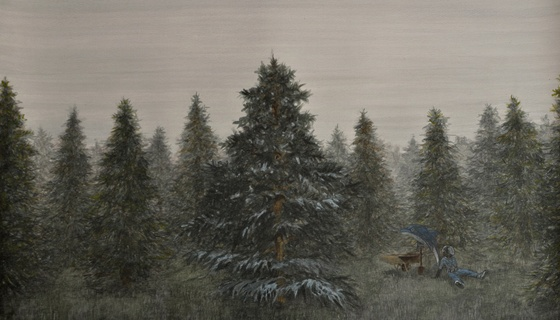

Funcionando principalmente a través de sus inauguraciones, Bellefour abre sus puertas por segunda vez y por una noche, presentando obras de Ariel Cusnir y Ana Montecucco, gastronomía inspirada en el desierto de Luciana Frezzotti, sesión de improvisación musical a cargo de Clara Smart y una discusión sobre el boleto de tren de cartón tipo “Edmonson”, con Patricio Larrambebere. Este salón mensual ofrece una alternativa a la experiencia aislada de las disciplinas culturales, donde el arte visual, la retórica, música y gastronomía se unen para ser disfrutadas complementariamente.
La cafetera amplificada de Montecucco, fabricada con placas de chapa anuncian el diseño, forma y función de la icónica cafetera italiana de 1930. Los ángulos ampliados y la relacion de cada pieza individual con la estructura general, muestran un proceso de fabricación y adoración a través del cual Montecucco transforma un artefacto doméstico en un centro de veneración. De manera similar la silueta en lápiz de un barco del siglo XIX demuestra un entendimiento de lo funcional y sentimental de una forma industrial que contiene en si misma una historia personal. Haciendo referencia a su herencia italiana y al viaje que trajo a sus antepasados a la Argentina, el barco de Montecucco, como su cafetera, actúa como símbolo de nostalgia e idealización. A través de la comprensión técnica de sus materiales, las obras de Montecucco muestran una realidad alternativa ilustrada a partir de una reflexión acerca de lo mágico del proceso mecánico.
Las acuarelas de Ariel Cusnir nos muestran su interés tanto por el contenido y lo material. Manipulando el material a través de un minucioso proceso de capas y aguadas, Cusnir crea escenas que se esfuerzan por ser simples más que grandiosas. En vez de intensificar imágenes, se las aliviana, creando la impresión de una escena descripta más que un faxsímil. Quedamos ante un portal hacia otro mundo, un espacio enriquecido con una conexión personal entre tiempo, espacio y sentimiento. Hay un balance ying-yang puesto en juego en los trabajos de Cusnir, la ransferencia de información entre lo real y lo imaginario fluye de manera constante. Un delfin y un buzo, dos personajes de su serie “Rio Abajo”, incorparados casi de casualidad, actúan como narradores enmersos en esta pintura de bosque denso, interrumiendo el paisaje y creando una escena inmersa en una ficción alternativa. Las acuarelas pequeñas de Cusnir muestran un despegue de lo narrativo en pos de explorar textura y forma, con una cancha de fútbol, agua en movimiento, o un rombo. La investigación de la acuarela como material se convierte lo narrativo en sí mismo, y el tema se une inextricablemente dentro del objeto.
La pianista Clara Smart, del Conservatorio Nacional de Música “Carlos López Buchardo”, ha enfocado sus mas recientes obras en la improvisación a partir del crepúsculo como tema. Su interés por la luz pálida en plena desaparición después del atardecer es su inspiración, alternando en sus piezas pasajes etéreos de música leve con oscuridad que repta anunciando la llegada de la noche. El resultado es a la vez hermoso y ominoso, nostálgico y agridulce, pensado para ser disfrutado como una danza y una meditación.
El “Banquete Avellana” de Luciana Frezzotti es una degustación de texturas, colores y sabores inspirados en platos del norte de Argentina. Utilizando papa, batata, choclo y el ancestral grano de quinoa, Frezzotti hace referencia a los paisajes de Salta, los valles del Cerro de los Siete Colores y la Quebrada de Humahuaca en Jujuy. El desierto es muchas veces percibido como un valle de la muerte, como un cuenco árido del que poca o escasa vida puede surgir, mas en realidad es un ecosistema rico - aunque tal vez un ecosistema un poco mas duro, severo y recursivo.
El interés por los “Ferrocarriles Argentinos” de Patricio Larrambebere, artista y profesor, atraviesa tanto su investigación académica como su práctica artística. El ferrocarril implica una multiplicidad de significancias, desde lo político hasta lo personal. El lugar en donde yacen las vías determina la movilidad social y la industria de una nación; la distribución de las personas y los bienes. Igual de importantes son las implicancias nostálgicas y emocionales del viaje en tren; de vacaciones y conección entre gente separada por grandes distancias. Usando el boleto de cartón tipo Edmonson, Larrambebere hace referencia a un amplio abanico de implicaciones acerca del ferrocarril en Argentina.
- Ramsey Arnaoot & Kat Sapera Abril 2012